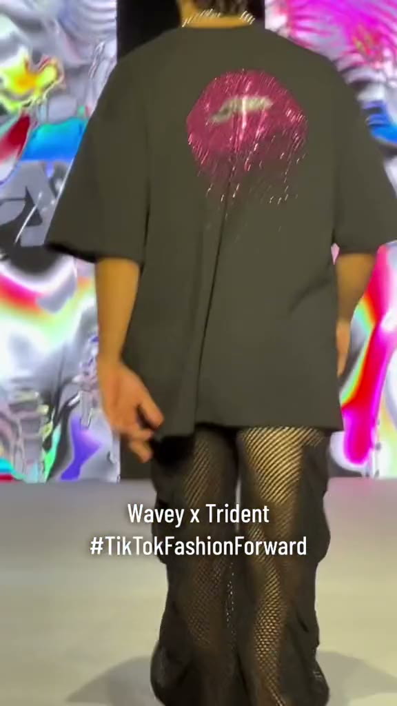
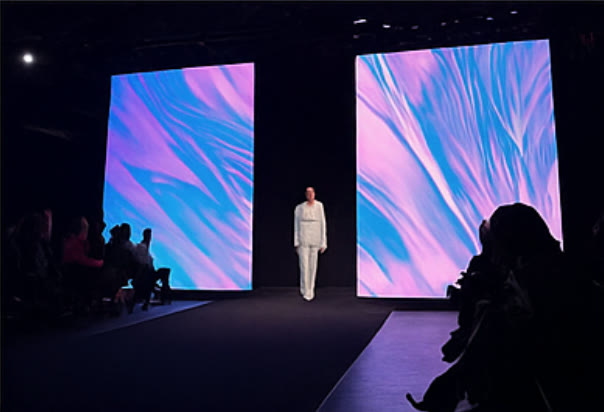
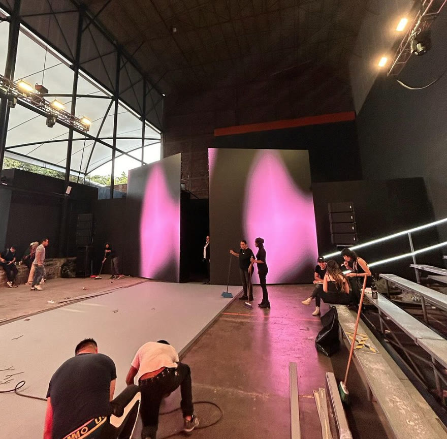
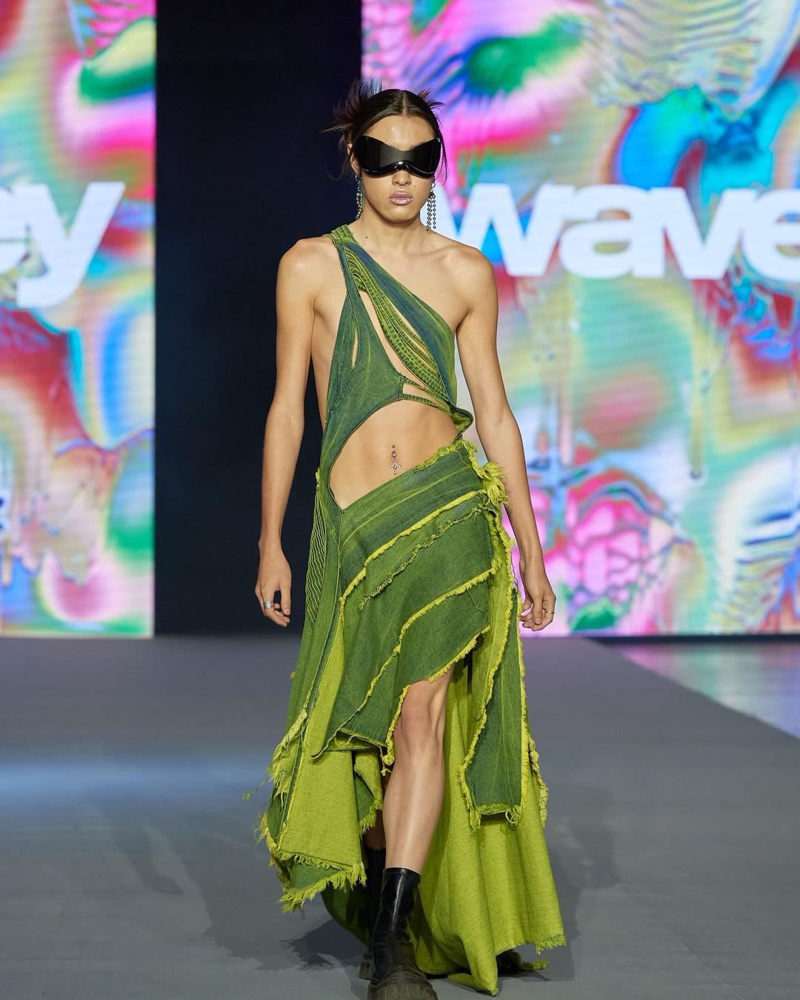
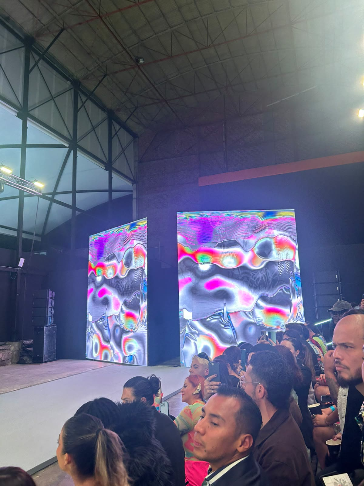
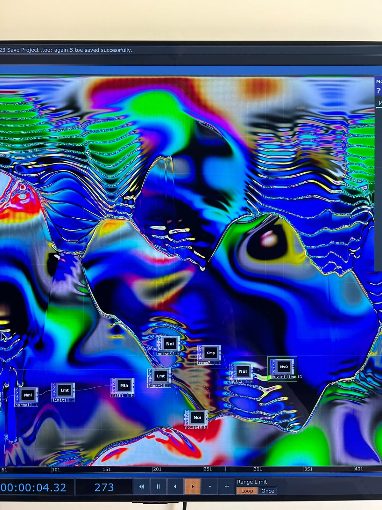
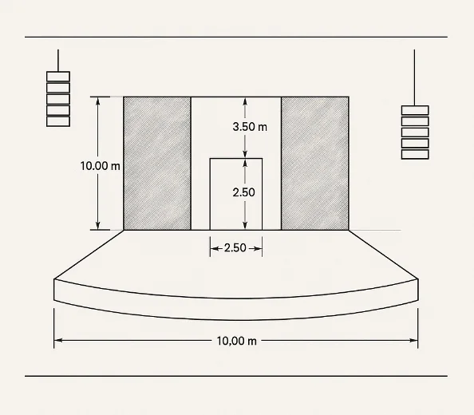

WAVEY × TikTok
Real-time visuals developed for an immersive runway experience in Mexico City.

The collection, extended into the room.
ANDATA LAB developed the visual direction and real-time content system for a WAVEY runway experience created with TikTok México and Trident.
The visual world mixed retrofuturism, digital rave culture and contemporary Mexican references — carrying the identity of the collection across the physical runway and the LED architecture around it.
Two walls, one walk.
A 10-metre runway between paired LED surfaces — the walk happens inside the image.


The walk, the walls, the room.
Live films from the show — the collection moving through the LED architecture.


Not a backdrop. Part of the show.
Visual direction
Motion, simulated fabrics, particles and 3D form treated as an active layer — timed with the walk, the lighting and the music rather than looping behind it.
Hybrid pipeline
TouchDesigner and Blender combined real-time graphics with prepared 3D and motion media, so the system could stay live without risking the show.
Multi-surface playback
Synchronized content across the paired LED walls, with live keyboard or OSC cues and pre-rendered fallbacks for reliability.
Live operation
ANDATA LAB ran the visual system on the night — direction, programming and VJ operation in the room.
A room scaled to the walk.


Built for the night, not the timeline.
ANDATA LAB on the show.
- Studio
- Andata Lab
- Role
- Creative direction · project management · VJ · visual design
- Collaboration
- WAVEY · TikTok México · Trident
- Engineering
- TouchDesigner · Blender
The same engine language, other rooms.
Related work includes generative motion systems, real-time interactive installations, and architectural projection mapping.
Need visuals that walk with the show?
We design real-time content and LED systems for runways, launches and live rooms.
Start a project →